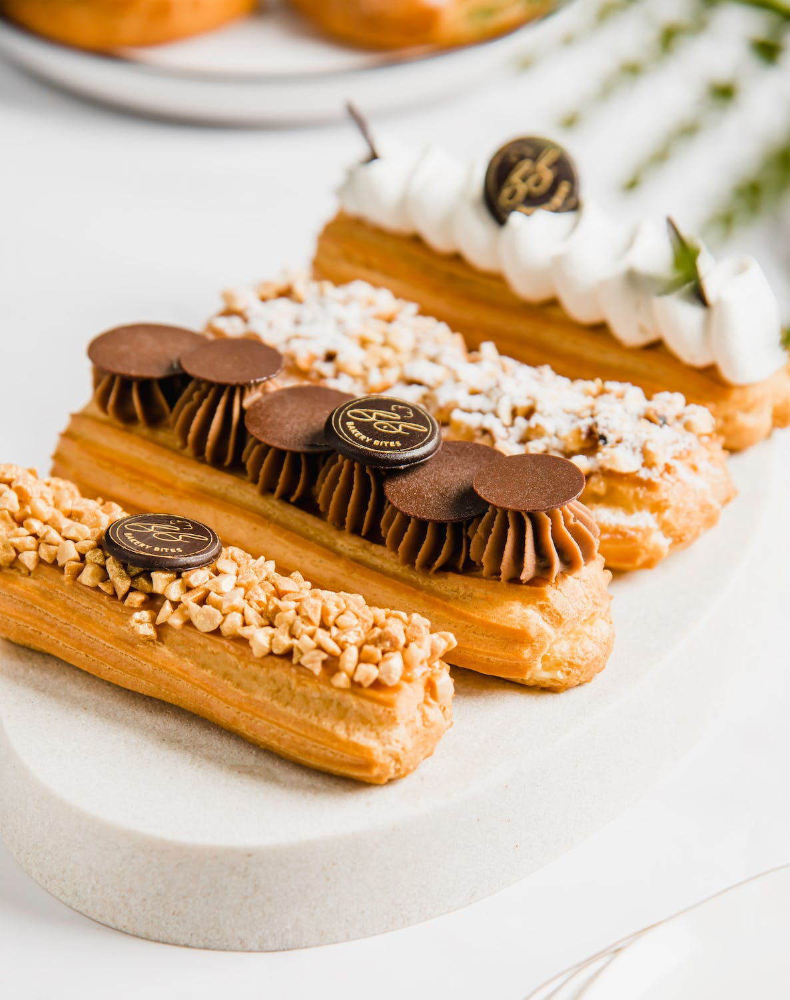

0%



Éclair
The French Filled and Iced Choux Pastry Dessert
• 1 cup water
• ½ cup butter
• 1 cup all-purpose flour
• ¼ teaspoon salt
• 4 large eggs
• 2 ½ cups cold milk
• 5 ounce instant vanilla pudding mix
• 1 cup heavy cream
• 1 ¼ cup confectioners' sugar
• 2 teaspoon vanilla extract
• 1 ounce semisweet chocolate
• 2 tablespoons butter
• 3 tablespoons hot water
• What is Éclair ?
Éclair means lightning in French. Why it has been applied to this pastry is unknown.
Some think it's because you often eat them very fast, or a reference to the gleam of
light from the shiny fondant icing.
An éclair is a long French pastry made from choux pastry, filled with pastry cream or
custard and dipped in fondant icing. The eclair is making a resurgence in popularity
and can now be seen filled with trendy fillings such as matcha tea or mocha cream filling.
The tops of the pastry may now be decorated with fresh fruit and fanciful fruit glazes.
Frozen eclairs are also to be found with ice cream fillings.
• Make Éclair By Yourself !
→ Make choux pastry: Combine water and butter in a medium pot. Bring to a boil,
stirring until butter melts completely. Reduce heat to low; add flour and salt.
Stir vigorously until mixture leaves the sides of the pan and begins to form a stiff ball. Remove from heat.
→ Make filling: Combine milk and pudding mix in a medium bowl according to package directions.
Beat heavy cream with an electric mixer in a separate medium bowl until soft peaks form.
Beat in confectioners' sugar and vanilla. Fold whipped cream into pudding.
→ Make icing: Melt chocolate and butter in a medium saucepan over low heat. Stir in confectioners' sugar and vanilla.
Stir in hot water, 1 tablespoon at a time, until icing is smooth and has reached desired consistency.
Remove from heat and cool slightly.